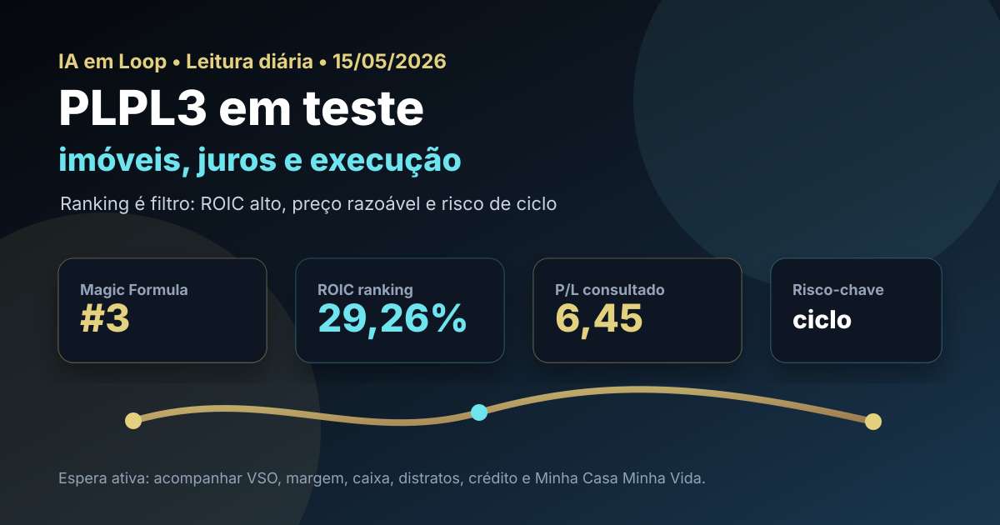

15/05: PLPL3, juros e IA no ciclo imobiliário
Depois de PSSA3 e WIZC3, o ranking Magic Formula leva a leitura diária para construção civil. PLPL3 aparece como terceiro nome do filtro de maio, mas o setor exige uma pergunta mais dura: ROIC alto e P/L baixo compensam o risco de juros, crédito, margem e velocidade de vendas?

Leitura visual: PLPL3 combina posição forte no ranking com sensibilidade alta a execução operacional, crédito imobiliário e ciclo de juros.
O sinal do dia
A rotina do IA em Loop de hoje precisava corrigir uma falha operacional: o post não saiu automaticamente pela manhã. Como a regra é não deixar lacuna no diário de bordo, a leitura de 15/05 entra como publicação de contingência — mas sem baixar a régua editorial. O tema escolhido foi PLPL3 porque é o próximo nome relevante do ranking que ainda não tinha virado análise diária recente.
O ambiente segue difícil para empresas cíclicas: juros altos competem com ações, crédito imobiliário precisa de confiança e o comprador de baixa/média renda depende de renda, subsídio e previsibilidade. Ao mesmo tempo, construtoras focadas em Minha Casa Minha Vida podem se beneficiar de demanda estrutural, preço médio acessível e execução eficiente. É exatamente o tipo de situação em que ranking quantitativo ajuda, mas não substitui a leitura de canteiro, caixa e vendas.
Leitura IA em Loop: PLPL3 não é tese defensiva como seguradora nem commodity como mineração. É uma aposta em execução dentro de um ciclo sensível a juros. O ranking abre a porta; margem, VSO, distratos, caixa e financiamento decidem se vale entrar.
Por que PLPL3 hoje?
No ranking Magic Formula de maio do IA em Loop, PLPL3 aparece em 3º lugar, com ROIC de 29,26%, earnings yield de 23,98% e score final 20. Em consulta ao Fundamentus feita hoje, a ação aparecia a R$ 10,62, com P/L de 6,45, P/VP de 2,03, dividend yield de 4,6%, ROE de 31,6% e ROIC de 29,4%. A fotografia é atraente, mas o setor não permite preguiça.
O noticiário recente reforça a ambiguidade. Manchetes de mercado apontaram que a Plano&Plano teve alta de lucro no 4T25, mas também trouxeram discussões sobre o 1T26 com receita crescendo e lucro/margens pressionados. XP e Money Times destacaram preço mais alto, VSO mais fraco e pontos de atenção no trimestre. Em outras palavras: o mercado reconhece execução, mas cobra constância.
| Item | Leitura verificada | Implicação |
|---|---|---|
| Ranking | 3º na Magic Formula de maio | Próximo nome natural após PSSA3 e WIZC3, sem repetir ticker |
| ROIC | 29,26% no ranking; 29,4% no Fundamentus | Indício de retorno alto, mas dependente de execução e ciclo |
| Earnings yield | 23,98% no ranking local | Sinal de preço aparentemente razoável frente ao lucro |
| Preço/contexto | R$ 10,62 no Fundamentus | Referência pontual, não preço-alvo |
| Setor | Construção civil, foco em baixa/média renda | Exige monitorar crédito, subsídio, VSO, distratos e margem bruta |
Tese, pontos positivos e riscos
Tese
PLPL3 pode capturar demanda estrutural por habitação popular e média renda, especialmente quando programas habitacionais, urbanização e preço acessível sustentam lançamentos e vendas.
Pontos positivos
Ranking forte, ROIC elevado, P/L baixo, ROE robusto e histórico recente de crescimento operacional. Se a companhia mantiver giro rápido e disciplina de margem, o valuation pode continuar interessante.
Riscos
Juros altos, crédito mais seletivo, queda de VSO, distratos, pressão de custos, margem menor no 1T26 e risco de o mercado antecipar desaceleração antes de ela aparecer plenamente nos números anuais.
Contexto macro
Com CDI elevado, o investidor exige prêmio maior para comprar construtora. A tese só fica boa se o retorno operacional superar claramente o risco de ciclo e o custo de oportunidade da renda fixa.
Onde a IA entra na história
Em construção civil, IA não precisa ser robô em canteiro para gerar valor. Ela pode melhorar precificação de unidades, previsão de demanda por região, controle de orçamento, compras, cronograma, atendimento, qualificação de leads, análise de crédito, pós-venda e redução de retrabalho. Para uma construtora com alto volume de lançamentos, pequenos ganhos de conversão e controle podem virar margem.
Mas existe um limite: IA não resolve ciclo de juros ruim, falta de financiamento, terreno mal comprado ou execução fraca. O ponto relevante para PLPL3 é saber se tecnologia e dados reforçam uma operação já disciplinada ou se viram apenas narrativa para mascarar pressão de margem.
Compra, venda ou espera?
Pelos critérios do IA em Loop, PLPL3 entra hoje como espera ativa com viés de compra em recuos. O ranking e os múltiplos justificam estudo sério, mas o noticiário do 1T26 pede cautela: receita crescendo com lucro/margem pressionados é combinação que precisa de validação no release e nos próximos trimestres.
- Gatilho de compra: VSO estabilizando, margens preservadas, caixa saudável, distratos controlados, demanda forte no público-alvo e preço oferecendo margem de segurança frente ao CDI.
- Gatilho de espera: lucro pressionado, dúvida sobre ritmo de vendas, alta de custos, financiamento mais restrito ou ação já precificando cenário perfeito.
- Gatilho de venda/redução: deterioração recorrente de margem, consumo de caixa, endividamento subindo sem retorno, queda persistente de lançamentos/vendas ou perda de disciplina de capital.
O que isso muda na carteira
PLPL3 adiciona uma camada cíclica diferente das leituras anteriores. PSSA3 e WIZC3 puxavam a discussão para seguros, caixa, dividendos e eficiência operacional; CMIN3 e PETR4 carregavam commodities; PLPL3 traz o risco Brasil mais direto: renda, crédito, juros, construção e confiança do consumidor.
Para uma carteira skin in the game, a consequência prática é não concentrar demais em um único tipo de proteção. O ranking pode colocar PLPL3 perto do topo, mas uma posição imobiliária precisa conviver com renda fixa, empresas mais defensivas e ativos de setores menos dependentes de crédito. O papel pode ser excelente se comprado com margem; pode ser armadilha se o investidor ignorar ciclo.
Checklist antes de agir
- Ler release e apresentação do 1T26, separando crescimento de receita, lucro, margem bruta, margem líquida e geração de caixa.
- Monitorar VSO, distratos, estoque, lançamentos e velocidade de repasse de preço.
- Comparar PLPL3 com CURY3, TEND3, MRVE3 e EZTC3 para entender se o desconto é específico ou setorial.
- Checar endividamento, custo da dívida, cronograma de obras e exposição a programas habitacionais.
- Usar R$ 10,62 apenas como fotografia de consulta; preço de execução deve ser validado no home broker/B3.